Обзор
В разделе ниже представлена информация о том, как настроить низкополигональные и высокополигональные модели для расчета высококачественной карты нормалей.
Сломанные швы карты нормалей
Много раз после рендеринга карты нормалей в Xnormal, применения ее к сетке низкого разрешения и просмотра в Cryengine вы обнаруживали швы на карте нормалей, как на рисунке ниже. В этом уроке мы объясним, что это такое, почему они происходят и что делать, чтобы их избежать.
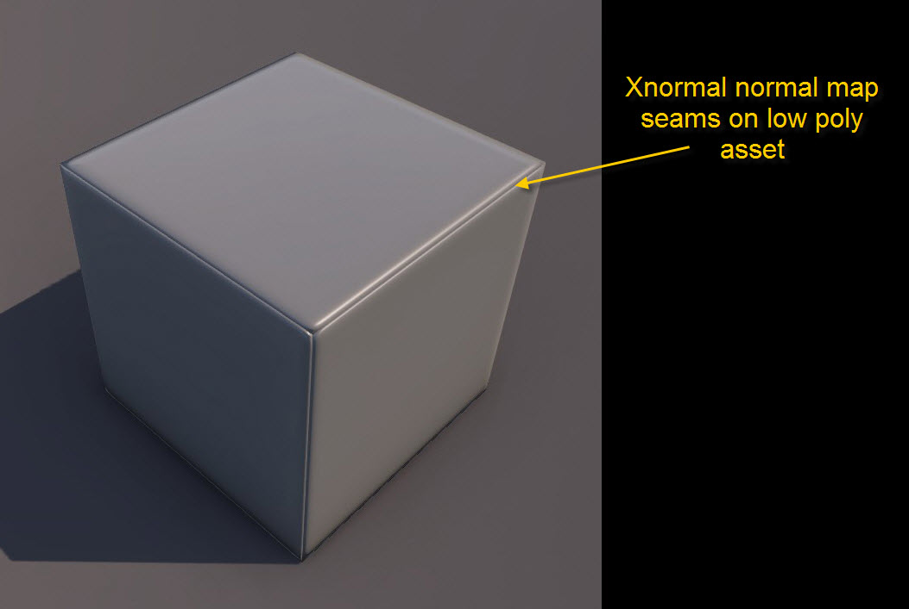
Согласно общей логике, низкополигональная сетка, которая используется для рендеринга высокополигональной коробки, имеет точно такой же размер, как и высокополигональная сетка, но xNormal использует низкополигональную сетку в качестве клетки рендеринга, и в этом кроется причина возникновения этих ошибок.
Способ, которым xNormal запекает карту нормалей, отбрасываемые лучи идут в перпендикулярном направлении от низкополигональной сетки, а это означает, что захватывается только то, что отображается в низкополигональной сетке. И, как мы упоминали ранее, низкополигональная сетка буквально действует как клетка.
Чтобы помочь вам визуализировать процесс, мы подготовили изображение ниже.
Как вы можете видеть, розовые линии представляют низкополигональные грани, а зеленые линии представляют высокополигональные грани, поэтому низкополигональная сетка располагается точно поверх вашего высокополигонального блока.
Желтые стрелки обозначают лучи, исходящие от низкополигональной сетки во время рендеринга в xNormal.
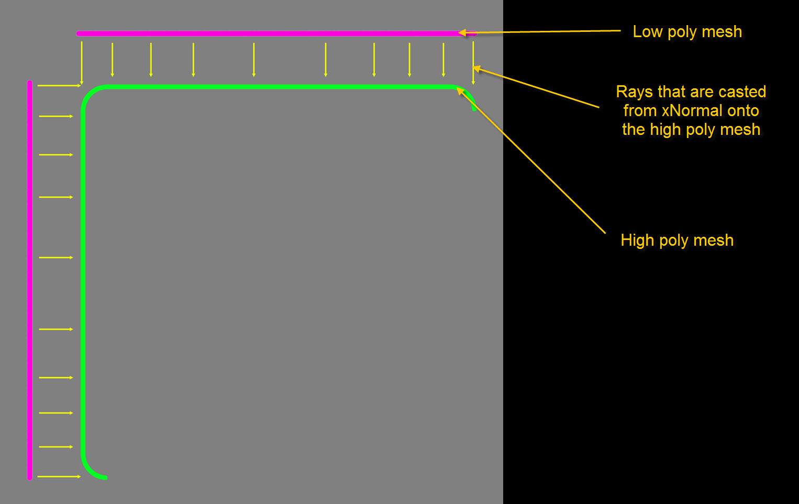
На изображении ниже мы показали, что на самом деле было запечатлено на карте нормалей и как это выглядит на модели.
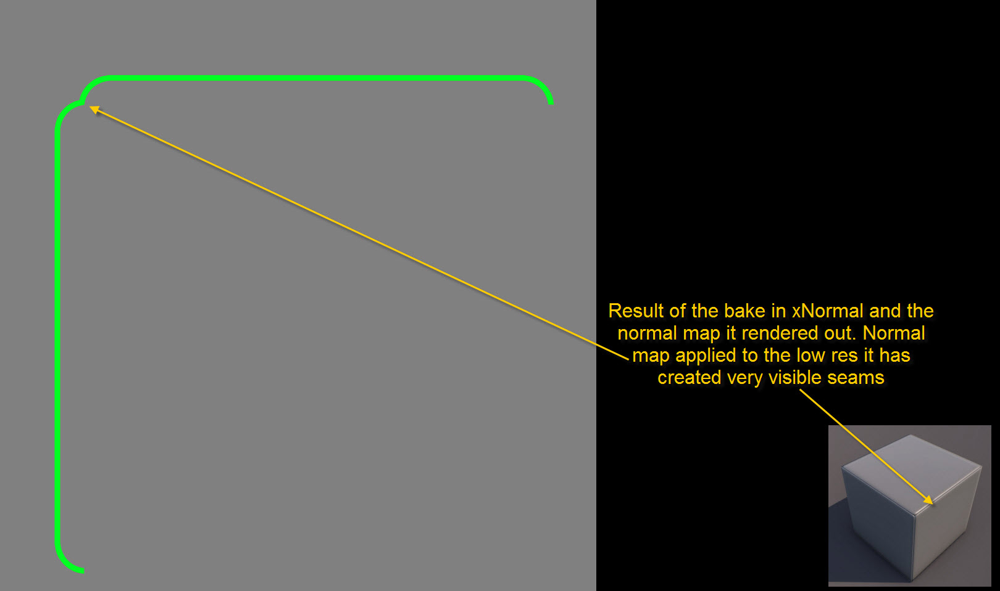
Существует несколько вариантов решения этой проблемы, вам следует выбрать наиболее эффективный для конкретной ситуации.
Использование пользовательской клетки рендеринга в xNormal
xNormal предлагает возможность использовать пользовательскую клетку, которая создается, а затем экспортируется из пакета моделирования.
Это не самое практичное и быстрое решение, поскольку для получения желаемого эффекта требуется много времени на настройку клетки, особенно на больших и сложных формах, поэтому рекомендуется оставить это как вариант, а не как правило.
Для этого вам нужно продублировать ваш окончательный объект с низким разрешением и уменьшить его так, чтобы в этом случае края куба с низким разрешением находились прямо посередине скошенных краев куба с высоким разрешением.
Для более сложных ресурсов следует использовать модификатор «Push» в 3dsMax.
С помощью модификатора push вы можете указать более точную настройку, которая лучше всего работает в большинстве случаев, а также ее можно легко отменить или изменить.
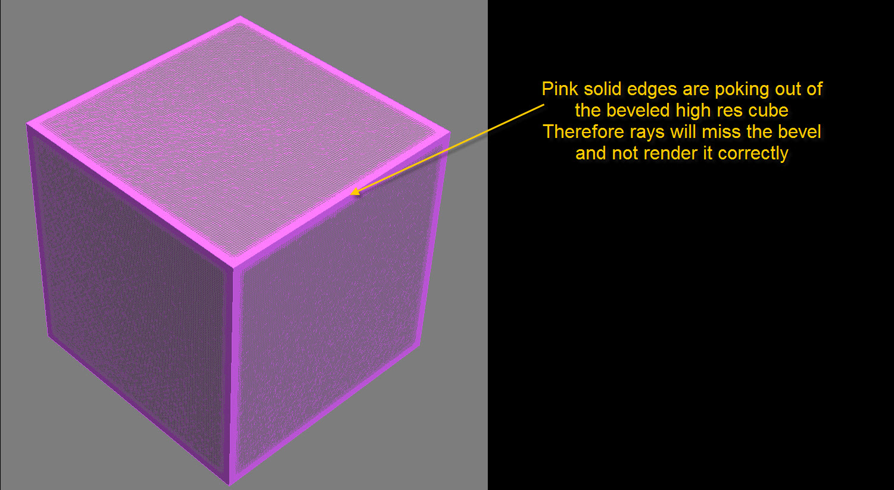
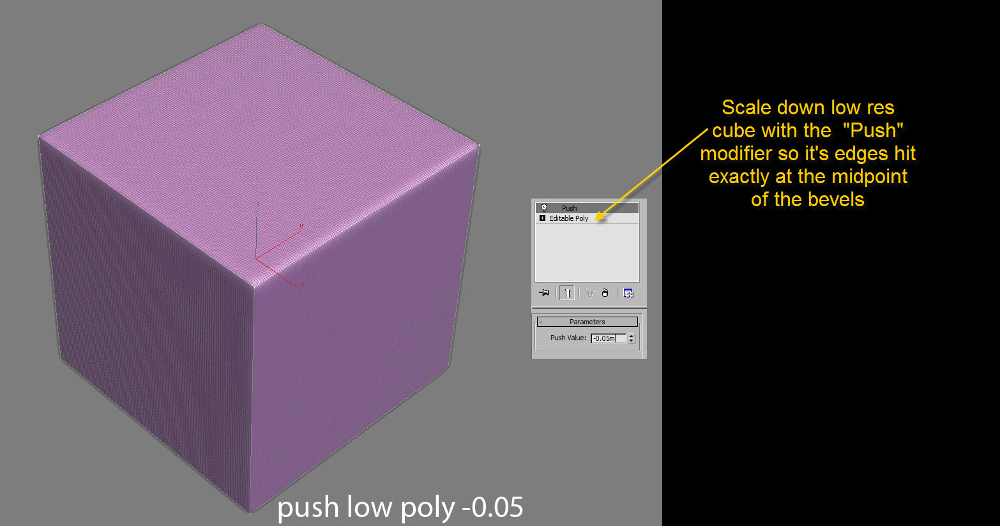
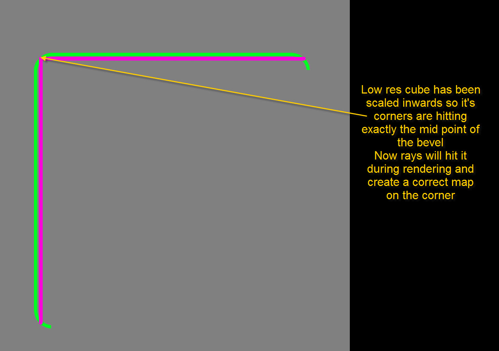
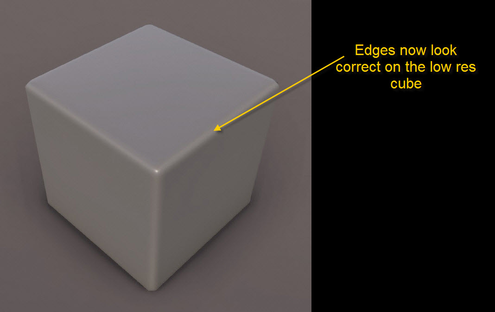
Второй способ исправить это — добавить немного больше геометрии, добавив скосы к вашему ресурсу с низким разрешением там, где он скошен на вашем ресурсе с высоким разрешением. Это будет дороже с точки зрения геометрии, но даст вам более плавный и лучший силуэт.
Это также ускорит процесс по сравнению с вариантом ниже, поскольку лучи улавливаются правильно благодаря скосу, обеспечивающему дополнительную геометрию.
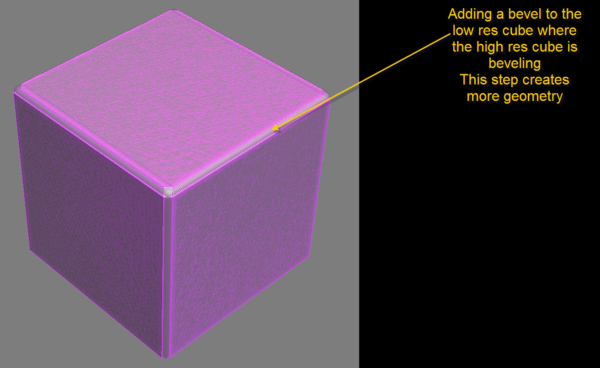
Как расположить UV на основе групп сглаживания, чтобы получить чистую карту нормалей, используя xNormal
Чтобы получить наилучшие результаты при рендеринге карты нормалей с использованием xNormal, желательно разделить низкополигональный ассет на разные группы сглаживания и создать для каждой группы сглаживания собственный остров UV.
Преимущество заключается в том, что карты нормалей будут отображаться чище и в некоторых случаях обеспечат большую возможность повторного использования.
Наличие одной группы сглаживания для всего низкополигонального актива и подключение всех UV означает, что во время рендеринга карты нормалей xNormal должна соответствовать деталям высокополигональной модели, то есть она должна компенсировать это во время запекания, поскольку направления нормалей часто смещены относительно низкополигональной модели по сравнению с высокополигональной, поскольку у нее меньше геометрии для работы, а нормали низкополигональной модели усредняются.
Назначение ему нескольких групп сглаживания и разделение его по собственным островам UV означает, что ему потребуется меньшая компенсация. Важно сохранять между ними некоторое пространство. Если они будут слишком близко, это вызовет некоторые проблемы с рендерингом.
Обратной стороной является то, что разделение его на отдельный остров UV приводит к увеличению стоимости пространства UV. Это может значительно увеличить время производства, но конечный результат будет лучше и чище, поскольку это приведет к меньшему количеству визуальных ошибок.
Как правило, для компенсации скорости лучше всего иметь один остров UV на каждую группу сглаживания.
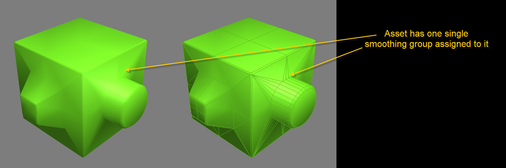
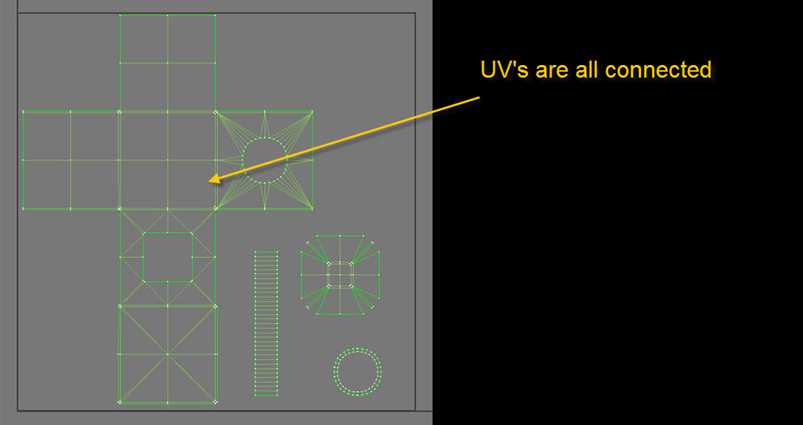
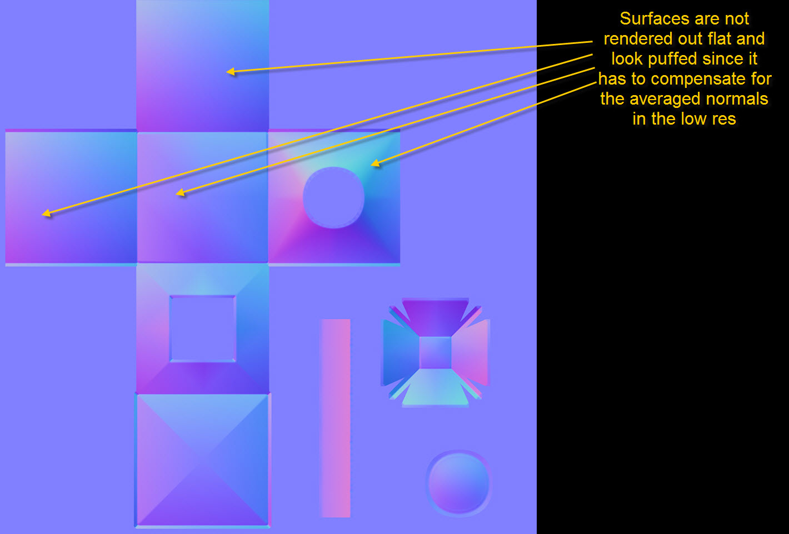
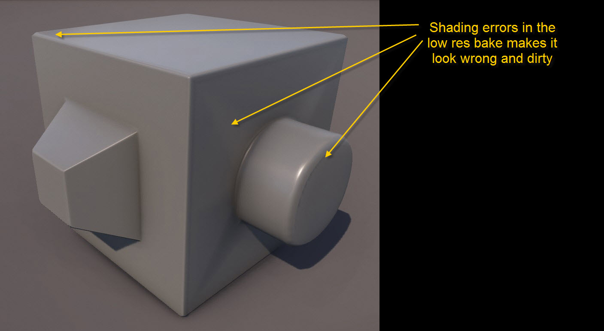
Вот результаты после назначения нескольких групп сглаживания и разделения островов UV в соответствии с ними.
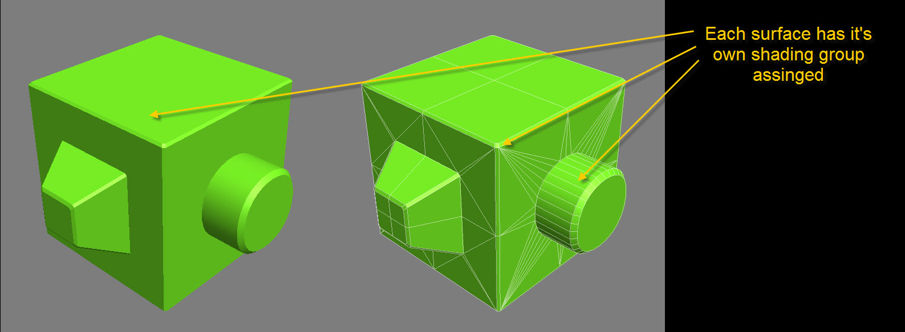
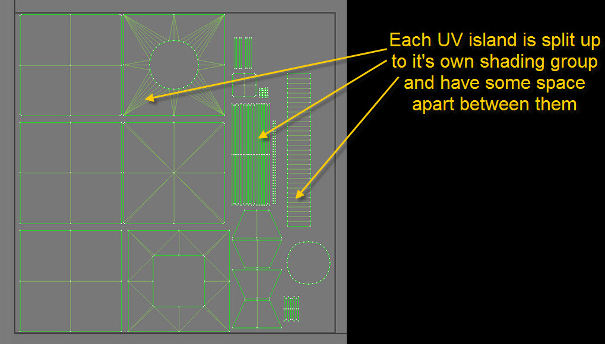
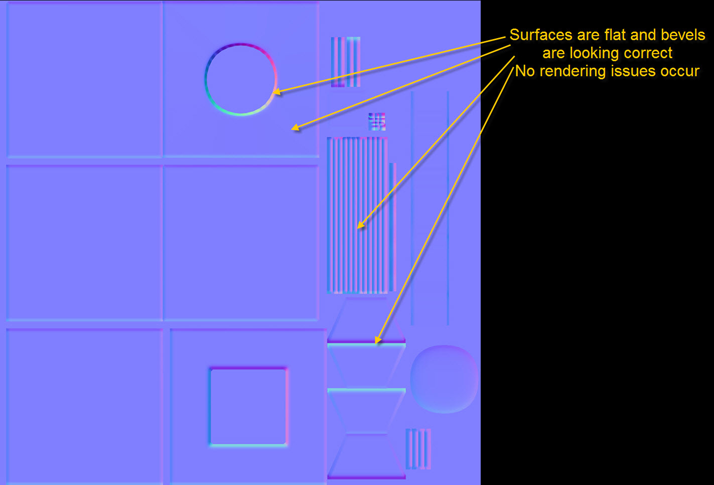
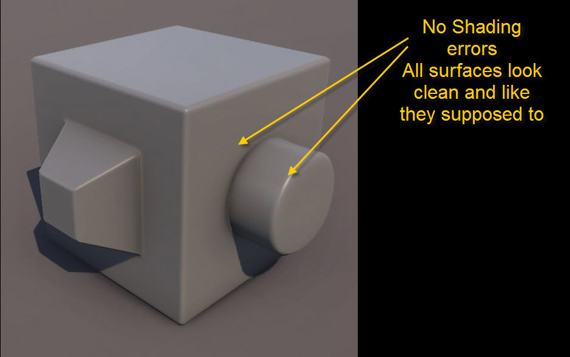